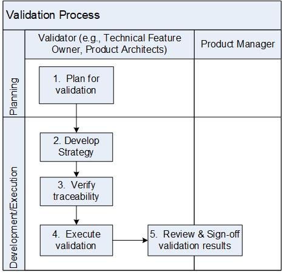

Validation Process¶
Validation activities include reviewing each desired product Epics with committed date for the release against the acceptance criteria (documented in the Requirements Management system). The goal of this process is to confirm that the product meets the defined requirements and its acceptance criteria. The Validator (e.g., Technical Feature Owner/Product Architect) is responsible for this process.
Note: The validation activities are performed throughout the product lifecycle and is complete when all the inputs identified in this process are satisfied.
Entry Criteria |
|
Inputs |
|
Exit Criteria |
|
Outputs |
|
Activities¶

Step # |
Activity Name |
Description |
|---|---|---|
1 |
Plan for validation |
Develop a strategy for validating the product against the committed Epics with release date. The validation strategy is documented in the Validation plan according to the Validation Plan Template. The Validation plan will be reviewed, as defined by the Document Review process and placed under configuration management. Note: In cases where the program level/generic plan already exists, the release may choose to use the existing document instead of creating anew for the release. |
2 |
Develop Strategy |
The Validator defines the strategy based on the committed Epics with Stories and acceptance criteria. |
3 |
Verify traceability |
Traceability is established from the validation results to the product features. |
4 |
Execute validation |
Based on the validation strategy documented in the validation plan, the Validator performs the validation and documents the results and deviations. |
5 |
Review & Sign-Off validation results |
Product Line Manager & Product Architect review/sign-off the validation results and deviations. For deviations, a change request is raised according to the Change Management Process. Note: Depending on the complexity and size of the product, the validator could be the Technical Feature Owner(s) instead of the Product Architect. Product Line Manager and Product Architect sign-off on the validation results. Once completed, the validation results are checked into the CM system. |
{kind=link}
Change Log¶
Date |
Change Request ID |
Version |
Change By |
Description |
05/19/2020 |
N/A |
0.1 |
Shree Vidya Jayaraman |
Initial Draft |